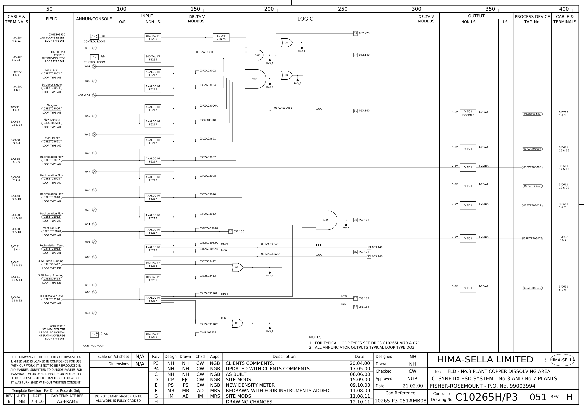

ESD Drawing Explorer
HIMA-Sella C10265H/P3, ICI Synetix No.3 plant. Click anything on the sheet. Drag to pan, scroll or pinch to zoom.
Sheet
FLD 051, logic
Loop 075, wiring
Mode
Explore
Trace a signal
Glossary
Check yourself
+
−
Fit

Blue = selected. Red = the signal being traced.